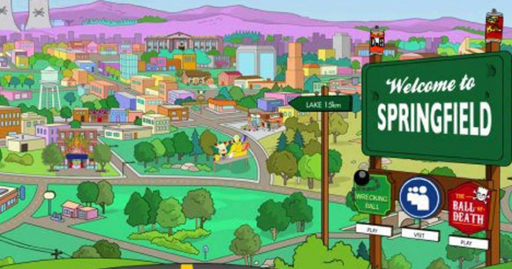
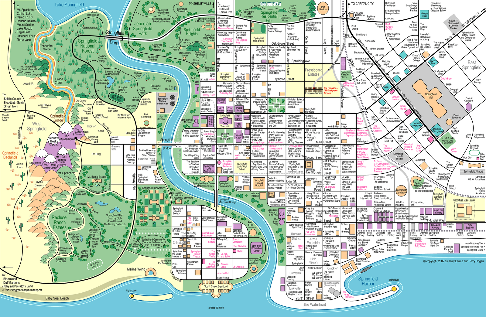

Centro de Springfield
Es la zona más concurrida de la ciudad. Allí se encuentran comercios, restaurantes, edificios históricos y la plaza central.
Springfield es una ciudad ficticia reconocida por su particular identidad, sus barrios diversos y la gran cantidad de actividades que ofrece a sus habitantes y visitantes.
La ciudad fue fundada en 1796 por un pequeño grupo de colonos que buscaba establecer una comunidad cercana a importantes rutas comerciales. Con el paso de los años, Springfield creció hasta convertirse en una ciudad moderna, manteniendo algunas de sus tradiciones originales.
Actualmente, Springfield combina zonas residenciales, espacios naturales, comercios, centros culturales y lugares históricos que forman parte de la identidad de la ciudad.
La identidad de Springfield se caracteriza por la diversidad de sus habitantes y por una fuerte cultura comunitaria. Sus vecinos participan durante todo el año en actividades, festivales y encuentros que permiten mantener vivas las tradiciones locales.
Uno de los símbolos más representativos de la ciudad es la plaza central, un punto de encuentro donde suelen realizarse ferias, conciertos y celebraciones.
Springfield cuenta con diferentes barrios y zonas, cada uno con características propias.
Es la zona más concurrida de la ciudad. Allí se encuentran comercios, restaurantes, edificios históricos y la plaza central.
Es una zona tranquila principalmente destinada a viviendas. Cuenta con parques, espacios recreativos y calles arboladas.
Se encuentra en las afueras de Springfield y concentra fábricas, depósitos y diferentes empresas que forman parte de la actividad económica de la ciudad.
Es una de las principales zonas naturales de Springfield. Es utilizada para realizar actividades al aire libre, caminatas y encuentros familiares.
| Dato | Información |
|---|---|
| Fundación | 1796 |
| Población | Aproximadamente 35.000 habitantes |
| Gentilicio | Springfieldense |
| Clima | Templado, con veranos cálidos e inviernos frescos |
| Idioma | Español |
| Actividad principal | Comercio, industria, turismo y actividades culturales |

La cultura de Springfield está marcada por la participación de sus habitantes. Durante todo el año se organizan actividades deportivas, culturales y recreativas para personas de todas las edades y juegos para niños y niñas.
La ciudad también cuenta con una amplia oferta gastronómica, espacios verdes y centros donde se desarrollan exposiciones, talleres y espectáculos.
Springfield es una ciudad pensada para disfrutar tanto de sus espacios urbanos como de sus zonas naturales y propuestas culturales.
Para conocer sus principales atractivos, podés visitar la sección Lugares de interés.
